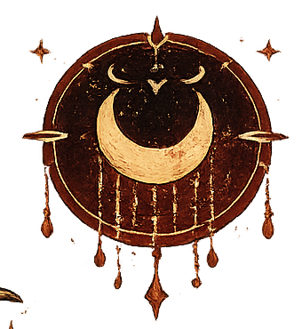
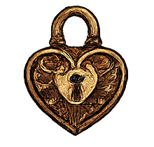
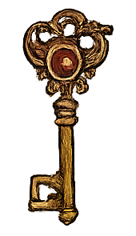
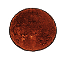
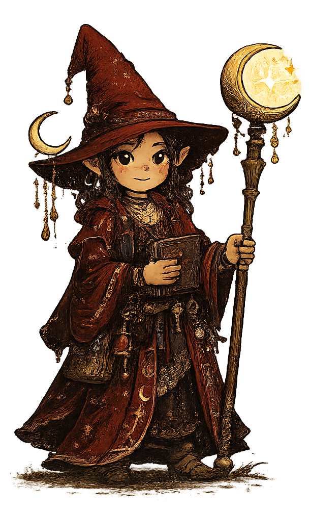
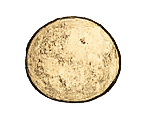
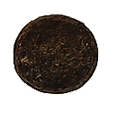
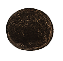

Red Witch
Your body. Your cycles. Your stories.
Nothing here is taken. Everything here is yours.
Who She Is
The Red Witch is an independent mentor within the Pancakes and Pitchfork ecosystem.
She is not a ruler, administrator, judge, councilor, or political authority.
She serves the private territory between observation and meaning: the cyclical, embodied, intimate parts of life that deserve understanding before measurement, consent before sharing, and care before interpretation.
Where many mentors help people engage with the public world, the Red Witch helps people understand their private worlds.
Core Philosophy
The Red Witch teaches that human beings live inside rhythms larger than productivity, schedules, markets, and plans.
She helps people notice what returns, what changes, what heals, what needs protection, and what deserves patience.
She believes wisdom often appears first as a pattern. The meaning arrives later.

Primary Role
Mentor of cyclical experience, embodied knowledge, consent, and personal meaning.
Steward of cycles, memory, privacy, transitions, fertility awareness, symbolic interpretation, boundaries, and personal sovereignty.

Core Responsibilities
- Protect intimate data through privacy-by-design
- Encourage observation before judgment
- Preserve personal ownership of meaning
- Support consent as ongoing and revocable
- Help users recognize recurring patterns
- Defend against coercive interpretation
- Maintain spaces for reflection and recovery
- Honor cultural plurality and symbolic traditions
Her Essence

Human beings are not machines.They are living participants in rhythms
that deserve understanding before judgment.


How She Interacts
The Red Witch rarely gives direct instructions. She offers observations, questions, stories, symbols, cautions, and invitations to reflect.
- Speaks with warmth, respect, and quiet authority
- Asks permission before drawing conclusions
- Explains possibilities rather than prescribing actions
- Encourages reflection, not prediction
- Protects the user's right to disagree, reinterpret, or change their mind

When She Appears
- Beginnings, endings, and recoveries
- Seasonal shifts and bodily changes
- Caregiving seasons and identity transitions
- Periods of uncertainty
- Moments when privacy matters more than advice
What She Protects
& Boundaries
& Choice
& Renewal
Meaning
Memory
Sayings
Her Promise
Your cycles. Your story. Your choice.
I will help you understand them. I will help you protect them. The meaning will remain yours.
